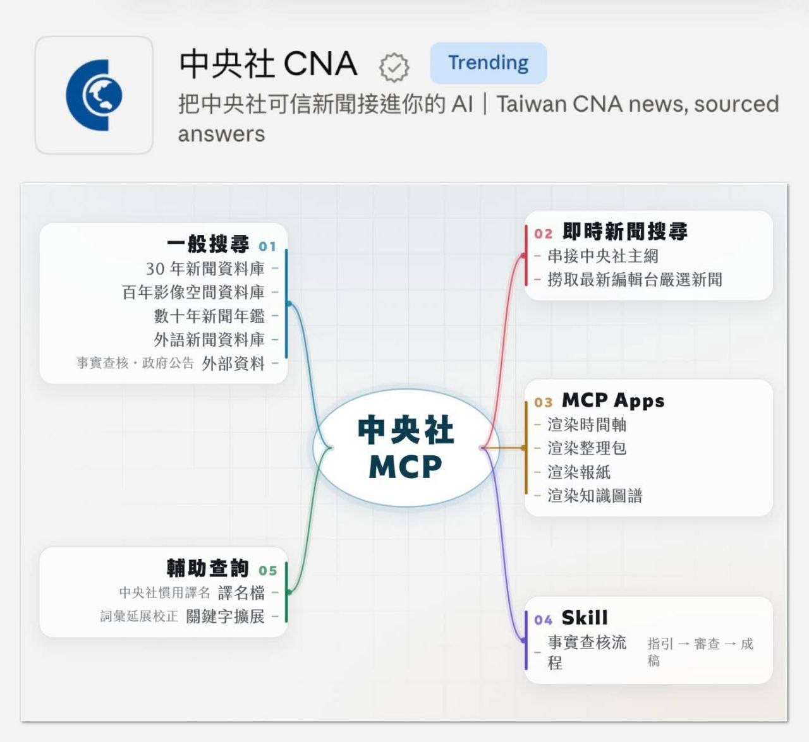
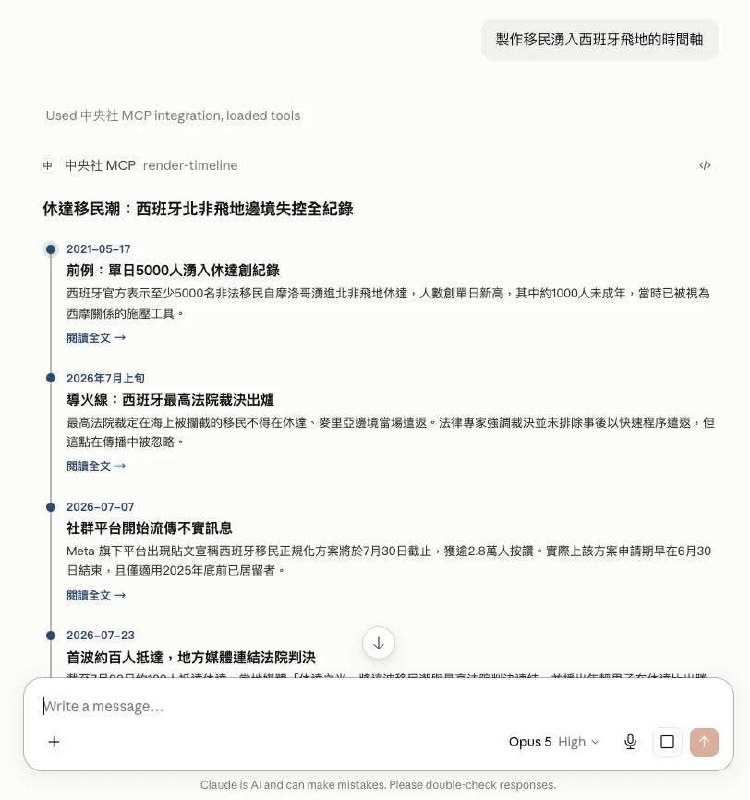
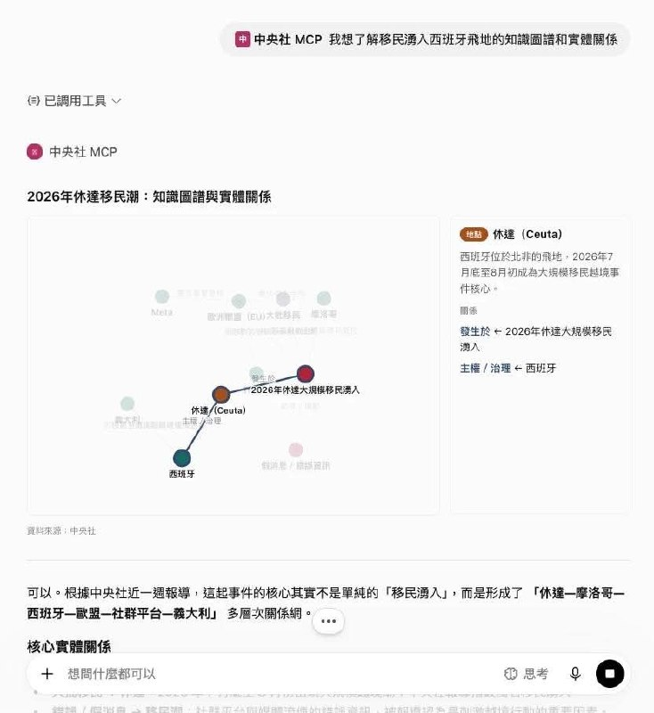

以開發者角度看「中央社 MCP」：新聞資料如何接進 AI
重點摘要



1. MCP 是資料與工具的通道，不是 AI 本身
貼文把 MCP 比喻成讓 AI 讀取特定工具與資料的鑰匙，並區分「工具型 MCP」與「資料型 MCP」。中央社案例的關鍵，在於把可信新聞資料接進 AI。
2. 新聞 MCP 的價值在「Web Search 搜不到」
越近的新聞可能已能被搜尋到；真正有獨特性的，是未上網的歷年新聞資料庫、百年照片、世界年鑑與編採脈絡。
3. 搜尋回到 Information Retrieval 基本功
團隊暫時不以語意 Embedding 為主，而是讓 AI 下關鍵字，使用既有 Elastic Search，再以 Reranker 補足語意，並搭配評測機制迭代工具。
4. MCP Apps 與 Skill 是新聞應用亮點
MCP Apps 讓 AI 不只吐文字，也能輸出時間軸、整理包、報紙與知識圖譜；Skill 則把事實查核流程包進 MCP 工具，教 AI 更好地使用新聞資料。
5. 產品化比 PoC 更難：金流、資安、平台相容
貼文強調 PoC 早已完成，但為串接金流、強化資安、重構後端與資料庫花了更多時間；不同 AI 平台對 MCP 的支援行為也仍需實測。
官方產品重點
中央社於 2026/8/31 發布「新聞 MCP」工具，主張讓 Claude、ChatGPT 等 AI 應用能即時檢索中央社新聞資料庫並標註來源，以改善 AI 回答新聞問題時常見的資訊來源不明、問 A 答 B 與缺乏可信出處問題。官方新聞提到資料範圍包含逾 30 年、近 500 萬則新聞稿，跨越百年、約 350 萬張新聞照片，2000 年至今的世界年鑑資料庫，以及全台約 150 個政府機關公開資料。
開發者視角：中央社 MCP 的架構思考
| 面向 | 貼文中的觀察 | 對新聞媒體的啟發 |
|---|---|---|
| MCP 定位 | 不是 AI，而是讓 AI 存取工具與資料的通道。 | 新聞媒體可把可信資料轉成 AI 可安全調用的服務。 |
| 資料型 MCP | 法律判決、政府開放資料等「搜尋不到」資料，特別適合 MCP 化。 | 中央社固有資產如歷年新聞、照片、年鑑，可能比公開網頁更有差異化。 |
| 搜尋策略 | 關鍵字搜尋 + Elastic Search + Reranker，而非一開始就只靠 Embedding。 | 可信回答的前提是檢索工具可靠，AI 只是使用者介面與推理層。 |
| 安全與產品化 | PoC 到產品還要處理金流、資安、後端邏輯與資料庫重構。 | AI 產品的首要問題不是炫技，而是能否安全、穩定、可營運。 |
| 平台相容 | Claude 最順、ChatGPT 次之，Grok 與 Gemini 各有設定與行為差異。 | MCP 仍處快速變動期，產品需持續跟上各平台實作差異。 |
小河觀察
這篇貼文有意思的地方，是它沒有把 MCP 當成流行名詞，而是回到「資料如何被 AI 正確取用」這個工程問題。對新聞媒體來說，真正的競爭力可能不是把公開網頁再餵一次 AI，而是把長期累積、可追溯、可查核、一般搜尋碰不到的資料資產，變成 AI Agent 可以安全調用的能力。
相關連結
圖片圖集
原文整理
【以開發者角度看「中央社MCP」】
在今天產品發表會前，一早還在東奔西跑確認盡可能降低 Bug 狀況，一週前開發時做夢都還可以 debug，足見這件事情對一個仍有冒牌者心理的「工程師」壓力頗大。還要感謝同事們的包容，經過近半年的努力，還是誕生了這個小小的短期里程碑。
主管在另文已詳述中央社 MCP 在 AI 時代對新聞媒體的意義，這篇就分述幾個開發中的心得分享：
1. MCP PoC 其實在數月前早已完成，只是花了近一個月和同事協作為了串接金流、增強資安，重構了整個後端邏輯與資料庫設計。週末甫發生 Zeabur 資安事件，只覺得每項 AI 產品首要仍然要好好思考和顧慮安全問題。
2. MCP 本身不是 AI，也沒有 AI，而是給 AI 像是一把鑰匙或通道，讓 AI 去讀特定工具、特定資料。對我來說目前市面上的「MCP」我認為可分為兩種：「工具型 MCP」、「資料型 MCP」。
「工具型 MCP」串接到 AI 後，使用者在 AI 下指令，會去調用既有資料庫去「幫使用者做事」，像是一直被廣告瘋狂打到的 Higgsfield MCP、Shopline 電商製作的 Shopline MCP 就是屬於這類型，我認為也是最典型的。
「資料型 MCP」反而是在近月才盛行，開始有社群大大們製作「法律判決 MCP」、「政府開放資料 MCP」。將這些工具製作成 MCP，最大的優勢就是「Websearch 搜尋不到」。AI 既有的「Websearch」功能，根本無法觸及這些資料，那這時設計 MCP 就相當有意義、且相當具有優勢。
雖然是自己開發的，但我仍然認為中央社反而在一個尷尬的地方，有一部分的資料、且越近的資料，其實網路搜尋就搜尋的到。反倒是「未上網的歷年新聞資料庫」、「百年照片」、「世界年鑑」這些固有資產的搜尋才是價值所在，但這卻不一定是市場青睞的地方。
（用這個邏輯，我反而認為有很多東西可以改成 MCP 後會變成巨大商機！像是做財報類數值型 MCP 串 AI 就變投資建議、棒籃球進階數據資料庫做 MCP 就變...）
那這樣作為中央社我們還能做什麼？因此我們發展以下這兩點技術上不新、但在新聞應用上新潮的用途
(1) MCP Apps：簡單來說，這個功能讓 AI 不僅只是吐文字給你，還可以像是一個美化過後的「小圖表」、「小網站」。而這個功能老早就出、也被 Claude 大量運用，不過在近期才適用在手機版 Claude 上。當下第一次看到這個工具時，我就覺得可以拿來做成懶人包、時間軸這類工具。因此在產品首發時，著手重新形塑這套 UI 工具，也是我最最喜歡的功能之一。
(2) Skill：目的是「教AI」怎麼好好用我們的 MCP。我們想將媒體實驗室實驗過的「事實查核」流程導入。原先期待的是「Skill Over MCP」這個功能，把「Skill」包在 MCP 內，但截至今天為止 MCP 正式版尚未推出這個功能，因此我們同樣將這個「Skill」也包裝成其中一個 MCP 呼叫工具使用，所以本質上雖然我們稱為 Skill，但他其實就是 Prompt 藏在 MCP 當中。
3. 如何「搜尋」：我們選擇暫且拋棄 AI 時代下最紅的以「語意 Embedding」搜尋為基礎設計，直接讓 AI 下關鍵字搜尋，感謝 Twinkle AI 給予的建議。基底使用中央社既有 Elastic Search 強大的運算機制，以純「關鍵字」搜尋輔以 Reranker 補足語意的方式加以處理。
而另外工具的設計我們也迭代至少三個版本，搭配著我們邊做邊建立的「評測機制」，回答更可信的前提，就是檢索工具要做的更好——是的，回到傳統 Information Retrieval 的問題了...。
不過，最令我擔心的其實是「覆蓋率（Coverage）」，使用者的一個問題，「到底查多少篇新聞才夠」，目前我沒有答案，不過這個命題或許也是未來我們持續探索研究的環節之一。（其實是我最感興趣的命題之一。）
4. 不知道要說這一系列開發要算是「AI Coding」還是「Vibe Coding」，這段時間開發最困難的大概是要簡單理解 MCP 這一堆新穎且複雜的術語和機制，還要跟上每一次的重大更新。後知後覺地在開發後期搭配 Anthropics 開發的 build-mcp-server Skill 開發後較為順遂，不然一開始都要邊開 Websearch 邊跟 Claude Code 好好聊到底要怎麼設計這款 MCP。
5. 坦白說，目前這個工具最順的就是在 Claude 系列的 AI，ChatGPT 次之，目前仍實測到 ChatGPT 一些 Bug 亟待解決，歡迎回報...（今天已經 debug 了一整天還沒找到原因）；Grok 也可以用，要填的東西偏多，但我們也做教學了；Gemini 的話...Google 對 MCP 的行為有點奇特，我們還在與他打架中...。
還許願哪家 AI 需要串，歡迎回報給我們，我們著手趕緊串。
內文冗長，仍感謝主管與同事們的包容，感謝中央社給予總是用不完的 Claude Code（或是我用太少了...），讓開發可以順利、鏗鏘向前！
（然後難的還在後頭，還有半年要煩惱嗚嗚）（持續歡迎給予建議和使用心得！）（我們是台灣第一個上架官方 Claude Directory 的媒體嗎！）
主管文：https://www.facebook.com/share/p/1Db5TLrhfk/?mibextid=wwXIfr
今日產品發佈：https://www.cna.com.tw/news/ait/202608310244.aspx
影音版：https://youtu.be/q6USP4oQXRI?si=moL5n6FpBojjRTvN
產品連結：https://ask.cna.com.tw/ask/index
備註
本頁先以 GitHub Pages 發布。Google Drive 備份可在重新授權後補上。